2.5.yolo系列¶
学习目标
- 知道yolo网络架构，理解其输入输出
- 知道yolo模型的训练样本构建的方法
- 理解yolo模型的损失函数
- 知道yoloV2模型的改进方法
- 知道yoloV3模型的网络结构及网络输出
- 了解yoloV3模型正负样本设计和损失函数的计算
YOLO系列算法是一类典型的one-stage目标检测算法，其利用anchor box将分类与目标定位的回归问题结合起来，从而做到了高效、灵活和泛化性能好，所以在工业界也十分受欢迎，接下来我们介绍YOLO 系列算法。
1.yolo算法¶
Yolo算法采用一个单独的CNN模型实现end-to-end的目标检测，核心思想就是利用整张图作为网络的输入，直接在输出层回归 bounding box（边界框） 的位置及其所属的类别，整个系统如下图所示：
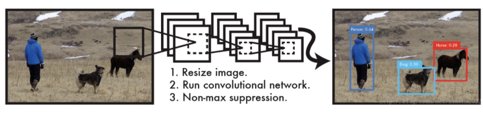
首先将输入图片resize到448x448，然后送入CNN网络，最后处理网络预测结果得到检测的目标。相比R-CNN算法，其是一个统一的框架，其速度更快。
1.1 Yolo算法思想¶
在介绍Yolo算法之前，我们回忆下RCNN模型，RCNN模型提出了候选区(Region Proposals)的方法，先从图片中搜索出一些可能存在对象的候选区（Selective Search），大概2000个左右，然后对每个候选区进行对象识别，但处理速度较慢。
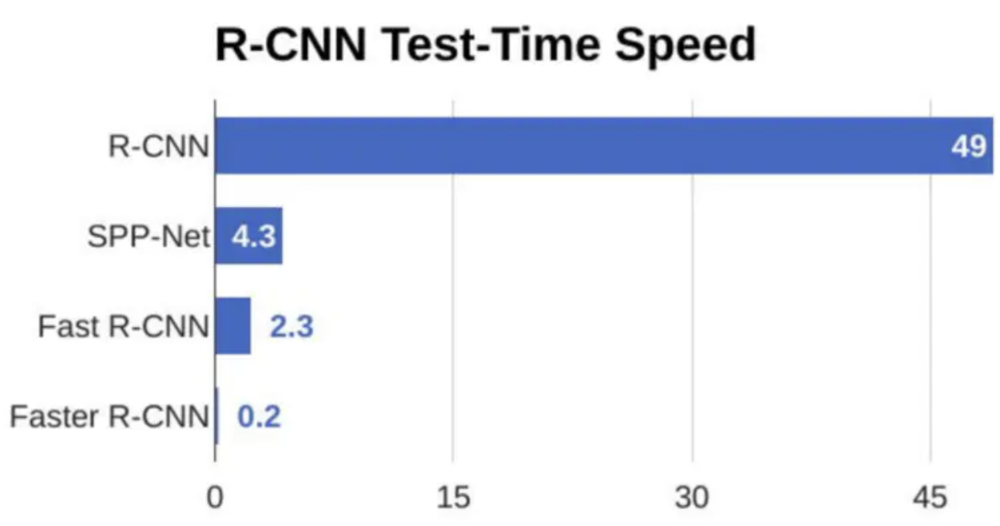
Yolo意思是You Only Look Once，它并没有真正的去掉候选区域，而是创造性的将候选区和目标分类合二为一，看一眼图片就能知道有哪些对象以及它们的位置。
Yolo模型采用预定义预测区域的方法来完成目标检测，具体而言是将原始图像划分为 7x7=49 个网格（grid），每个网格允许预测出2个边框（bounding box，包含某个对象的矩形框），总共 49x2=98 个bounding box。我们将其理解为98个预测区，很粗略的覆盖了图片的整个区域，就在这98个预测区中进行目标检测。
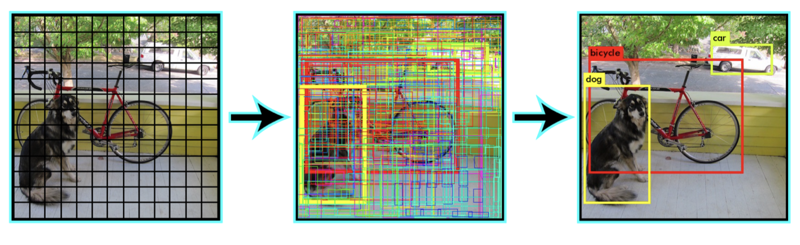
只要得到这98个区域的目标分类和回归结果，再进行NMS就可以得到最终的目标检测结果。那具体要怎样实现呢？
1.2 Yolo的网络结构¶
YOLO的结构非常简单，就是单纯的卷积、池化最后加了两层全连接，从网络结构上看，与前面介绍的CNN分类网络没有本质的区别，最大的差异是输出层用线性函数做激活函数，因为需要预测bounding box的位置（数值型），而不仅仅是对象的概率。所以粗略来说，YOLO的整个结构就是输入图片经过神经网络的变换得到一个输出的张量，如下图所示：
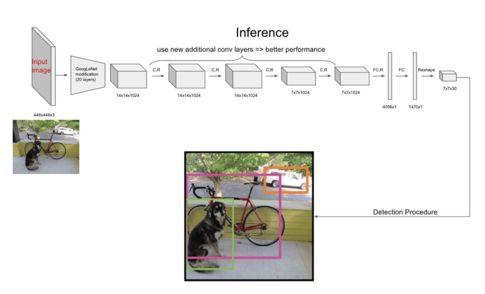
网络结构比较简单，重点是我们要理解网络输入与输出之间的关系。
1.2.1 网络输入¶
网络的输入是原始图像，唯一的要求是缩放到448x448的大小。主要是因为Yolo的网络中，卷积层最后接了两个全连接层，全连接层是要求固定大小的向量作为输入，所以Yolo的输入图像的大小固定为448x448。
1.2.2 网络输出¶
网络的输出就是一个7x7x30 的张量（tensor）。那这个输出结果我们要怎么理解那？
1.7x7网格¶
根据YOLO的设计，输入图像被划分为 7x7 的网格（grid），输出张量中的 7x7 就对应着输入图像的 7x7 网格。或者我们把 7x7x30 的张量看作 7x7=49个30维的向量，也就是输入图像中的每个网格对应输出一个30维的向量。如下图所示，比如输入图像左上角的网格对应到输出张量中左上角的向量。
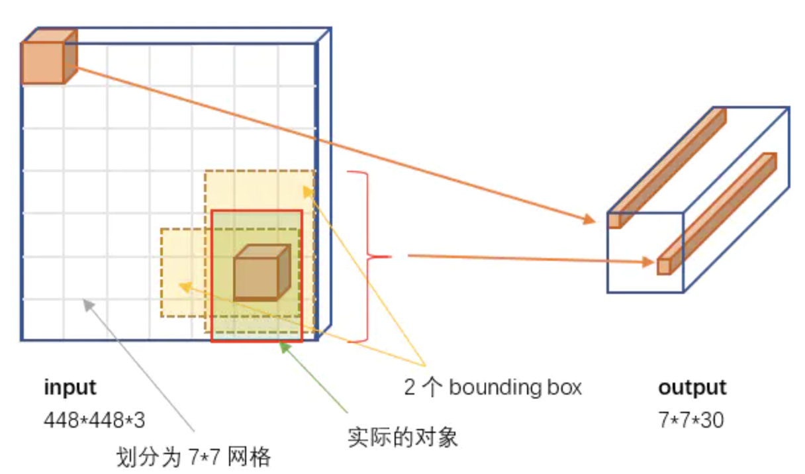
2.30维向量¶
30维的向量包含：2个bbox的位置和置信度以及该网格属于20个类别的概率
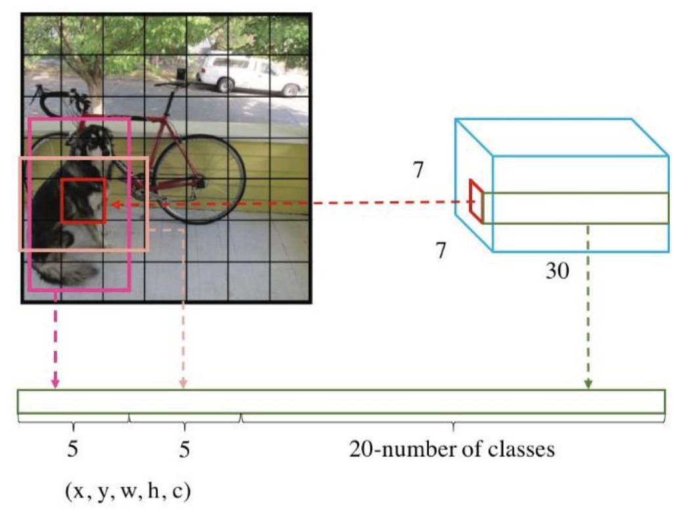
-
2个bounding box的位置 每个bounding box需要4个数值来表示其位置，(Center_x,Center_y,width,height)，即(bounding box的中心点的x坐标，y坐标，bounding box的宽度，高度)，2个bounding box共需要8个数值来表示其位置。
-
2个bounding box的置信度 bounding box的置信度 = 该bounding box内存在对象的概率 * 该bounding box与该对象实际bounding box的IOU，用公式表示就是：
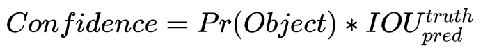
Pr(Object)是bounding box内存在对象的概率
- 20个对象分类的概率
Yolo支持识别20种不同的对象（人、鸟、猫、汽车、椅子等），所以这里有20个值表示该网格位置存在任一种对象的概率.
1.3Yolo模型的训练¶
在进行模型训练时，我们需要构造训练样本和设计损失函数，才能利用梯度下降对网络进行训练。
1.3.1训练样本的构建¶
将一幅图片输入到yolo模型中，对应的输出是一个7x7x30张量，构建标签label时对于原图像中的每一个网格grid都需要构建一个30维的向量。对照下图我们来构建目标向量：
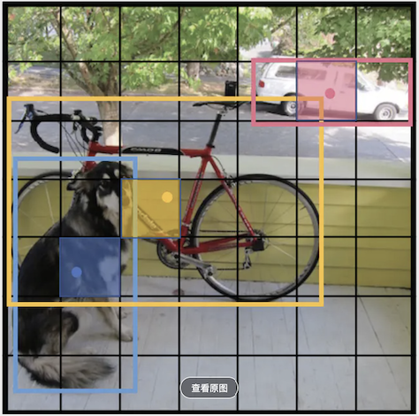
- 20个对象分类的概率
对于输入图像中的每个对象，先找到其中心点。比如上图中自行车，其中心点在黄色圆点位置，中心点落在黄色网格内，所以这个黄色网格对应的30维向量中，自行车的概率是1，其它对象的概率是0。所有其它48个网格的30维向量中，该自行车的概率都是0。这就是所谓的"中心点所在的网格对预测该对象负责"。狗和汽车的分类概率也是同样的方法填写
- 2个bounding box的位置
训练样本的bbox位置应该填写对象真实的位置bbox，但一个对象对应了2个bounding box，该填哪一个呢？需要根据网络输出的bbox与对象实际bbox的IOU来选择，所以要在训练过程中动态决定到底填哪一个bbox。
- 2个bounding box的置信度
预测置信度的公式为：
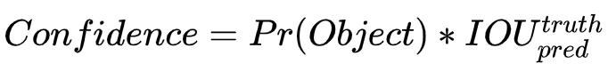
IOU_{pred}^{truth}利用网络输出的2个bounding box与对象真实bounding box计算出来。然后看这2个bounding box的IOU，哪个比较大，就由哪个bounding box来负责预测该对象是否存在，即该bounding box的Pr(Object)=1，同时对象真实bounding box的位置也就填入该bounding box。另一个不负责预测的bounding box的Pr(Object)=0。
上图中自行车所在的grid对应的结果如下图所示：
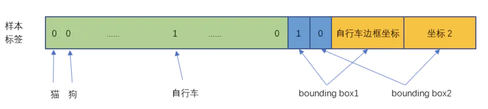
1.3.2 损失函数¶
损失就是网络实际输出值与样本标签值之间的偏差：
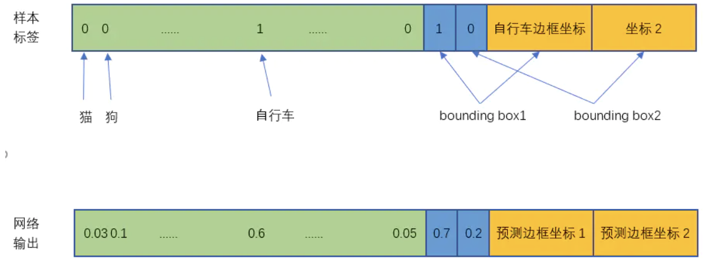
yolo给出的损失函数：
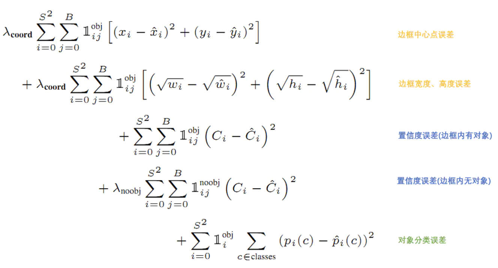
注：其中1_{i}^{obj}表示目标是否出现在网格单元i中，1_{ij}^{obj}表示单元格i中的第j个边界框预测器负责该预测，YOLO设置 \lambda_{coord} = 5 来调高位置误差的权重， \lambda_{noobj} = 0.5 即调低不存在对象的bounding box的置信度误差的权重。
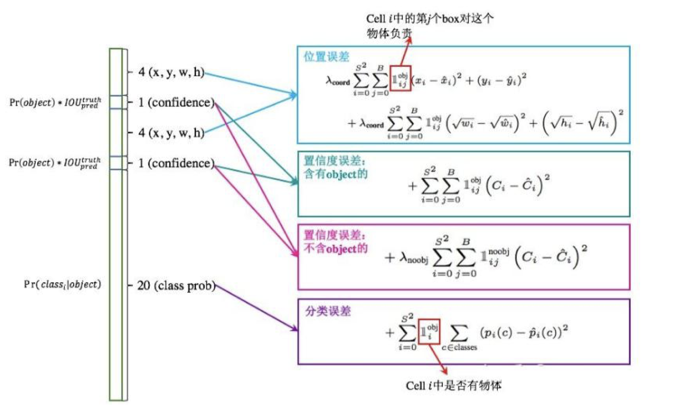
1.3.3 模型训练¶
Yolo先使用ImageNet数据集对前20层卷积网络进行预训练，然后使用完整的网络，在PASCAL VOC数据集上进行对象识别和定位的训练。
Yolo的最后一层采用线性激活函数，其它层都是Leaky ReLU。训练中采用了drop out和数据增强（data augmentation）来防止过拟合.
1.4 模型预测¶
将图片resize成448x448的大小，送入到yolo网络中，输出一个 7x7x30 的张量（tensor）来表示图片中所有网格包含的对象（概率）以及该对象可能的2个位置（bounding box）和可信程度（置信度）。在采用NMS（Non-maximal suppression，非极大值抑制）算法选出最有可能是目标的结果。
1.5 yolo总结¶
优点
- 速度非常快，处理速度可以达到45fps，其快速版本（网络较小）甚至可以达到155fps。
- 训练和预测可以端到端的进行，非常简便。
缺点
- 准确率会打折扣
- 对于小目标和靠的很近的目标检测效果并不好
2.yoloV2¶
YOLOv2相对v1版本，在继续保持处理速度的基础上，从预测更准确（Better），速度更快（Faster），识别对象更多（Stronger）这三个方面进行了改进。其中识别更多对象也就是扩展到能够检测9000种不同对象，称之为YOLO9000。 下面我们看下yoloV2的都做了哪些改进？
2.1 预测更准确（better）¶
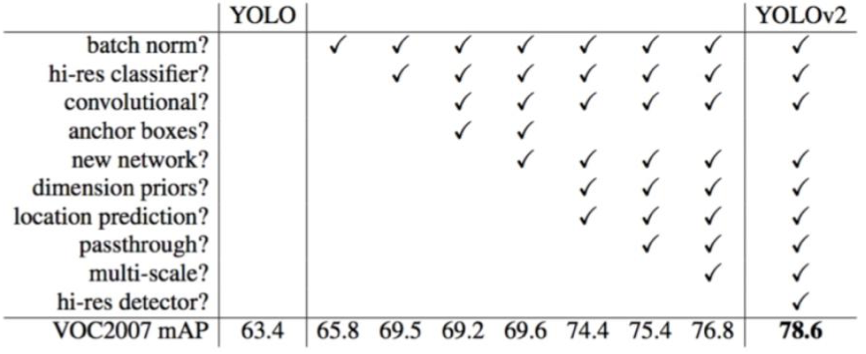
2.1.1 batch normalization¶
批标准化有助于解决反向传播过程中的梯度消失和梯度爆炸问题，降低对一些超参数的敏感性，并且每个batch分别进行归一化的时候，起到了一定的正则化效果，从而能够获得更好的收敛速度和收敛效果。在yoloV2中卷积后全部加入Batch Normalization，网络会提升2%的mAP。
2.1.2 使用高分辨率图像微调分类模型¶
YOLO v1使用ImageNet的图像分类样本采用 224x224 作为输入，来训练CNN卷积层。然后在训练对象检测时，检测用的图像样本采用更高分辨率的 448x448 的图像作为输入。但这样切换对模型性能有一定影响。
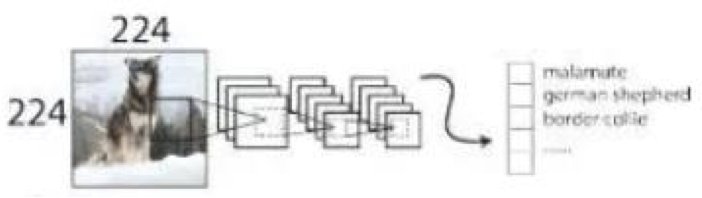
YOLOV2在采用 224x224 图像进行分类模型预训练后，再采用 448x448 的高分辨率样本对分类模型进行微调（10个epoch），使网络特征逐渐适应 448x448 的分辨率。然后再使用 448x448 的检测样本进行训练，缓解了分辨率突然切换造成的影响。
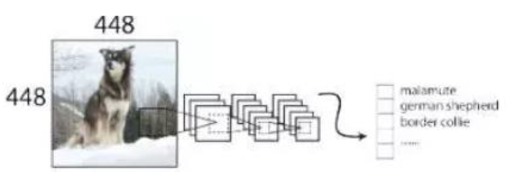
使用该技巧后网络的mAP提升了约4%。
2.1.3 采用Anchor Boxes¶
YOLO1并没有采用先验框，并且每个grid只预测两个bounding box，整个图像98个。YOLO2如果每个grid采用5个先验框，总共有13x13x5=845个先验框。通过引入anchor boxes，使得预测的box数量更多（13x13xn）。
2.2.4 聚类提取anchor尺度¶
Faster-rcnn选择的anchor比例都是手动指定的，但是不一定完全适合数据集。YOLO2尝试统计出更符合样本中对象尺寸的先验框，这样就可以减少网络微调先验框到实际位置的难度。YOLO2的做法是对训练集中标注的边框进行聚类分析，以寻找尽可能匹配样本的边框尺寸。
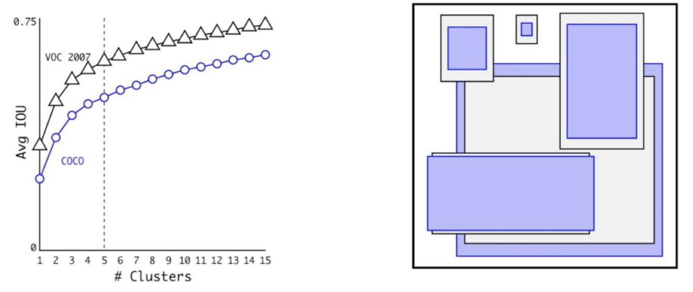
YoloV2选择了聚类的五种尺寸最为anchor box。
2.1.5 边框位置的预测¶
Yolov2中将边框的结果约束在特定的网格中：
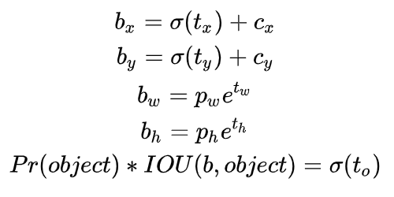
其中，
b_x,b_y,b_w,b_h是预测边框的中心和宽高。 Pr(object)∗IOU(b,object)是预测边框的置信度，YOLO1是直接预测置信度的值，这里对预测参数t_o进行σ变换后作为置信度的值。 c_x,c_y是当前网格左上角到图像左上角的距离，要先将网格大小归一化，即令一个网格的宽=1，高=1。 p_w,p_h是先验框的宽和高。 σ是sigmoid函数。 t_x,t_y,t_w,t_h,t_o是要学习的参数，分别用于预测边框的中心和宽高，以及置信度。
如下图所示：
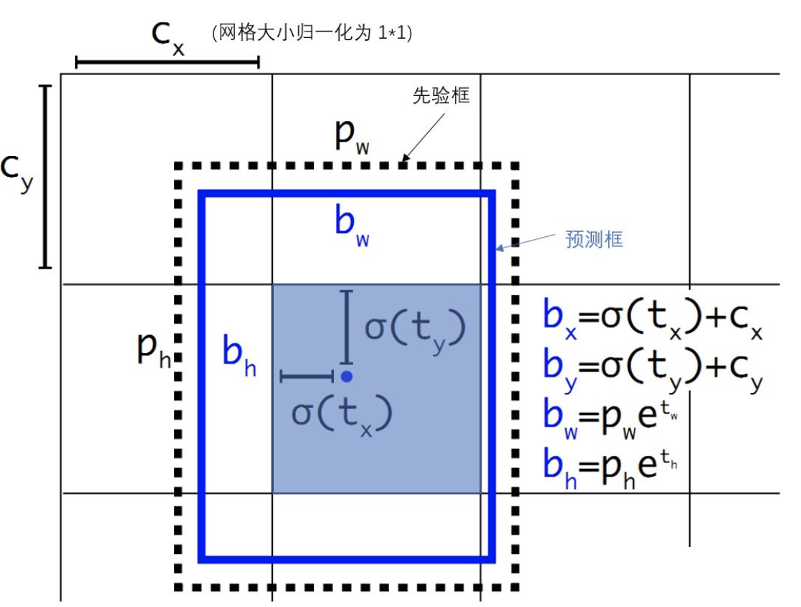
由于σ函数将 t_x,t_y约束在(0,1)范围内，预测边框的蓝色中心点被约束在蓝色背景的网格内。约束边框位置使得模型更容易学习，且预测更为稳定。
假设网络预测值为：
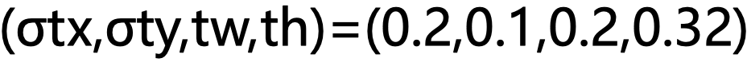
anchor框为：
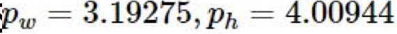
则目标在特征图中的位置：
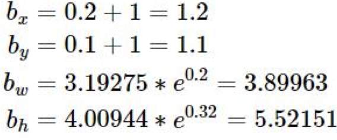
在原图像中的位置：
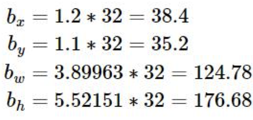
2.1.6 细粒度特征融合¶
图像中对象会有大有小，输入图像经过多层网络提取特征，最后输出的特征图中，较小的对象可能特征已经不明显甚至被忽略掉了。为了更好的检测出一些比较小的对象，最后输出的特征图需要保留一些更细节的信息。
YOLO2引入一种称为passthrough层的方法在特征图中保留一些细节信息。具体来说，就是在最后一个pooling之前，特征图的大小是26x26x512，将其1拆4，直接传递（passthrough）到pooling后（并且又经过一组卷积）的特征图，两者叠加到一起作为输出的特征图。
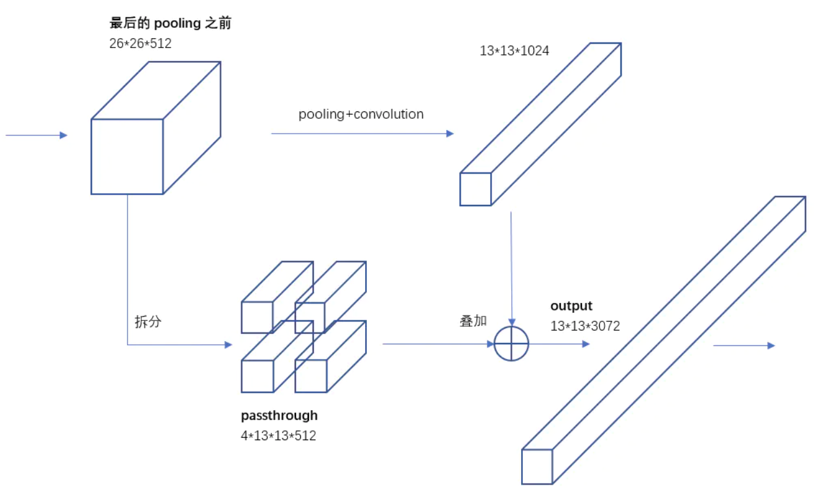
具体的拆分方法如下所示：
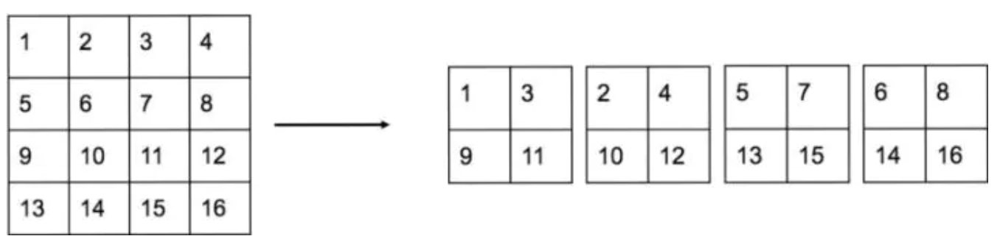
2.1.7 多尺度训练¶
YOLO2中没有全连接层，可以输入任何尺寸的图像。因为整个网络下采样倍数是32，采用了{320,352,...,608}等10种输入图像的尺寸，这些尺寸的输入图像对应输出的特征图宽和高是{10,11,...19}。训练时每10个batch就随机更换一种尺寸，使网络能够适应各种大小的对象检测。
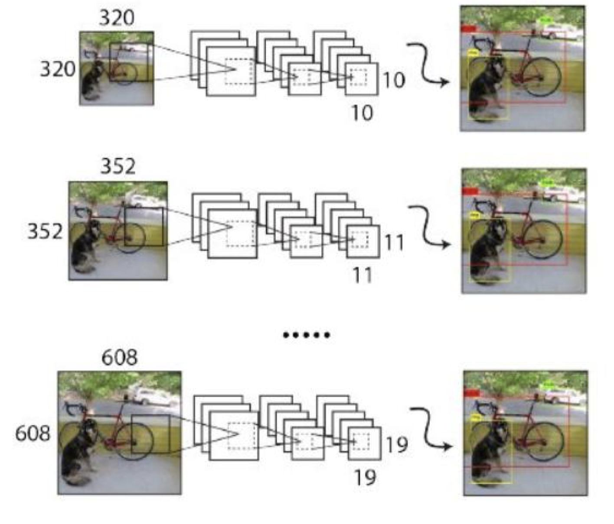
2.2 速度更快（Faster）¶
yoloV2提出了Darknet-19（有19个卷积层和5个MaxPooling层）网络结构作为特征提取网络。DarkNet-19比VGG-16小一些，精度不弱于VGG-16，但浮点运算量减少到约⅕，以保证更快的运算速度。
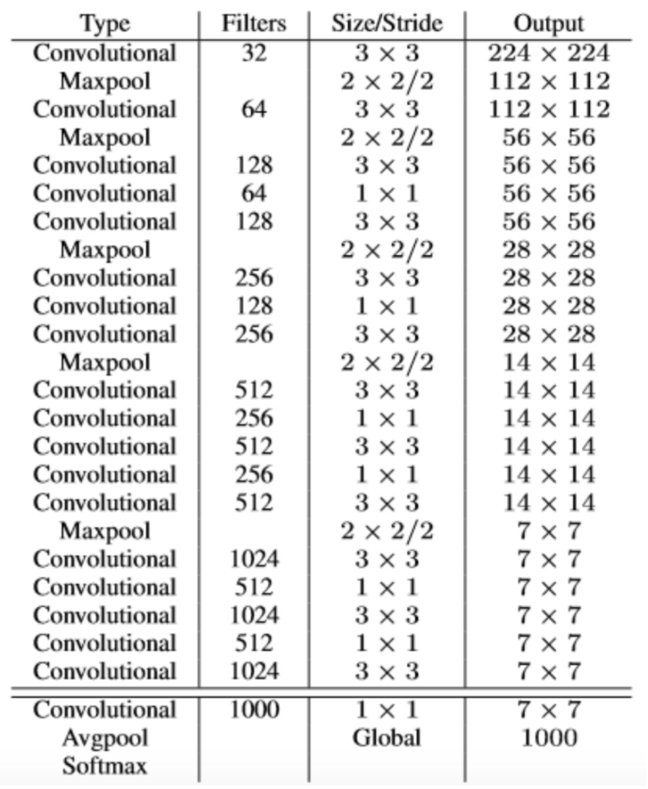
yoloV2的网络中只有卷积+pooling，从416x416x3 变换到 13x13x5x25。增加了batch normalization，增加了一个passthrough层，去掉了全连接层，以及采用了5个先验框,网络的输出如下图所示：
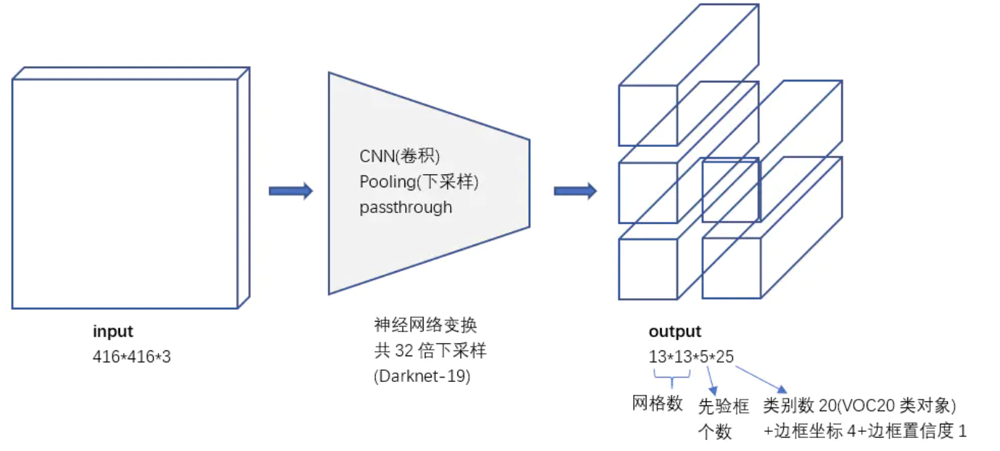
2.3 识别对象更多¶
VOC数据集可以检测20种对象，但实际上对象的种类非常多，只是缺少相应的用于对象检测的训练样本。YOLO2尝试利用ImageNet非常大量的分类样本，联合COCO的对象检测数据集一起训练，使得YOLO2即使没有学过很多对象的检测样本，也能检测出这些对象。
3.yoloV3¶
yoloV3以V1，V2为基础进行的改进，主要有：利用多尺度特征进行目标检测；先验框更丰富；调整了网络结构；对象分类使用logistic代替了softmax,更适用于多标签分类任务。
3.1算法简介¶
YOLOv3是YOLO (You Only Look Once)系列目标检测算法中的第三版，相比之前的算法，尤其是针对小目标，精度有显著提升。
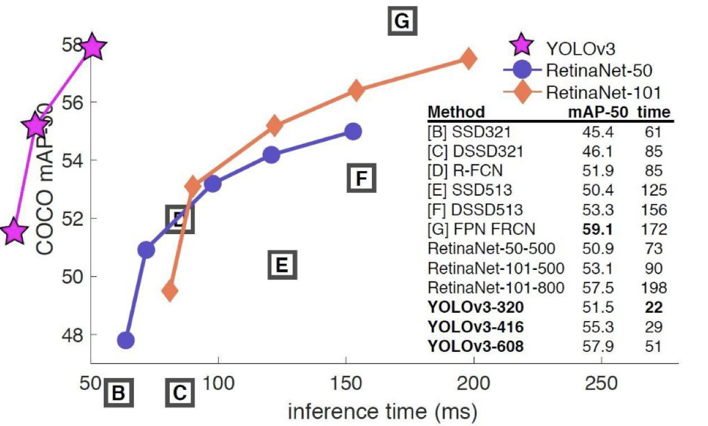
yoloV3的流程如下图所示，对于每一幅输入图像，YOLOv3会预测三个不同尺度的输出，目的是检测出不同大小的目标。
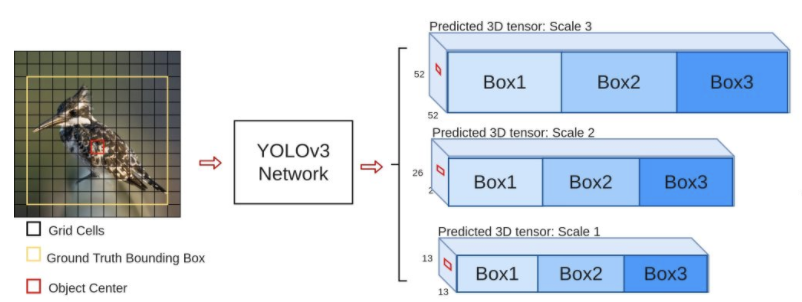
3.2 网络结构¶
yoloV3的模型结构如下所示：整个v3结构里面，没有池化层和全连接层，网络的下采样是通过设置卷积的步长为2来达到的，每当通过这个卷积层之后图像的尺寸就会减小到一半。
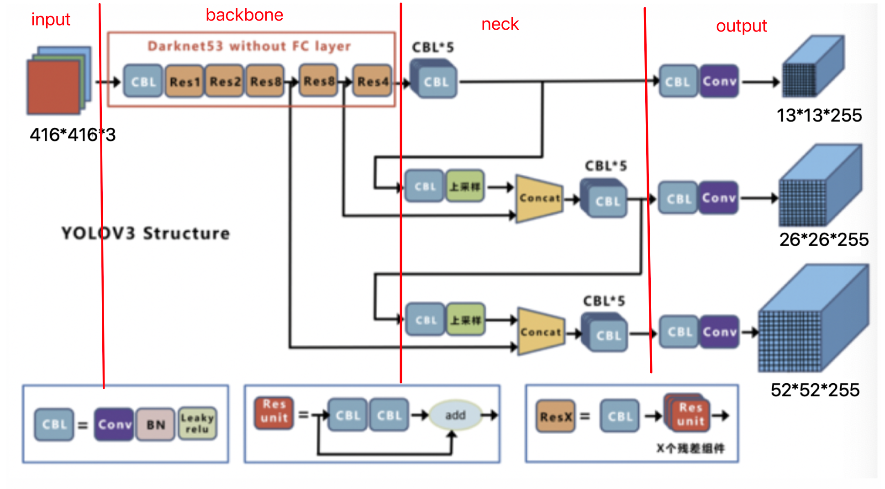
- 基本组件：蓝色方框内部分
1、CBL：Yolov3网络结构中的最小组件，由Conv+Bn+Leaky_relu激活函数三者组成。 2、Res unit：借鉴Resnet网络中的残差结构，让网络可以构建的更深。 3、ResX：由一个CBL和X个残差组件构成，是Yolov3中的大组件。每个Res模块前面的CBL都起到下采样的作用，因此经过5次Res模块后，得到的特征图是416->208->104->52->26->13大小。
- 其他基础操作：
1、Concat：张量拼接，会扩充两个张量的维度，例如26×26×256和26×26×512两个张量拼接，结果是26×26×768。
2、Add：张量相加，张量直接相加，不会扩充维度，例如104×104×128和104×104×128相加，结果还是104×104×128。
接下来我们按照输入（input）,backbone, neck, 输出（output）四部分介绍yoloV3的结构。
3.2.1 网络输入 （input）¶
网络的输入对图像的要求是大小必须是32的倍数（V2,V4,V5中都是这一要求）。主要是因为YoloV3的网络中，整个网络的最大的下采样倍数32，所以Yolo的输入图像的大小固定为32的倍数，在V3版本中默认是416x416。
3.2.2 骨干网络（backbone）¶
bacbone主要用来进行图像特征提取，YOLO3采用了Darknet-53的网络结构（含有53个卷积层），如下图所示，每个ResX中包含1+2×X个卷积层，因此整个主干网络Backbone中一共包含1+（1+2×1）+（1+2×2）+（1+2×8）+（1+2×8）+（1+2×4）=52，再加上一个FC全连接层，即可以组成一个Darknet53分类网络。
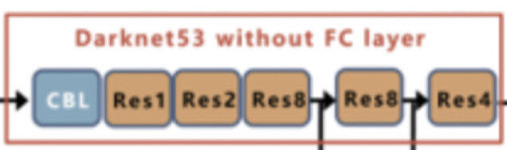
它借鉴了残差网络ResNet的做法，在层之间设置了shortcut，来解决深层网络梯度的问题，shortcut如下图所示：包含两个卷积层和一个shortcut connections。
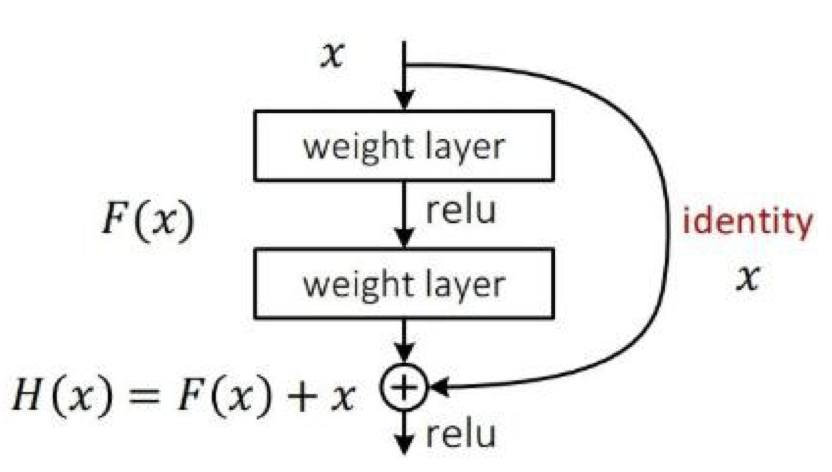
3.2.3 neck部分¶
yoloV3最重要的一个改进是引入了FPN网络进行特征融合，并获取多种尺度的特征图，进而完成多尺度检测，如下所示：
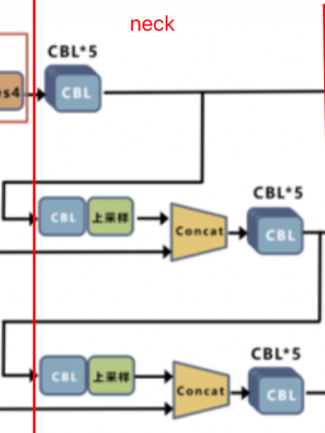
FPN网络与在FasterRCNN中的是类似的，都是当前层的feature map会对未来层的feature map进行上采样，并加以利用。这样，当前的feature map就可以获得“未来”层的信息，把低阶特征与高阶特征就有机融合起来了，提升检测精度。
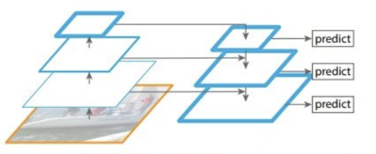
在YOLOv3中，就是采用这种方式来实现目标多尺度的变换的。FasterRCNN中的特征融合使用的是ADD的方式，而在V3中采用的方式是concat，其他的处理与FasterRCNN中是完全一样的。
3.2.4 输出部分¶
- anchor
与V2版本一样，yoloV3采用K-means聚类得到先验框的尺寸，为每种尺度设定3种先验框，总共聚类出9种尺寸的先验框。
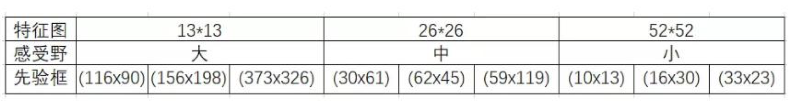
在COCO数据集这9个先验框是：(10x13)，(16x30)，(33x23)，(30x61)，(62x45)，(59x119)，(116x90)，(156x198)，(373x326)。在最小的(13x13)特征图上（有最大的感受野）应用较大的先验框(116x90)，(156x198)，(373x326)，适合检测较大的对象。中等的(26x26)特征图上（中等感受野）应用中等的先验框(30x61)，(62x45)，(59x119)，适合检测中等大小的对象。较大的(52x52)特征图上（较小的感受野）应用,其中较小的先验框(10x13)，(16x30)，(33x23)，适合检测较小的对象。
直观上感受9种先验框的尺寸，下图中蓝色框为聚类得到的先验框。黄色框式ground truth，红框是对象中心点所在的网格。
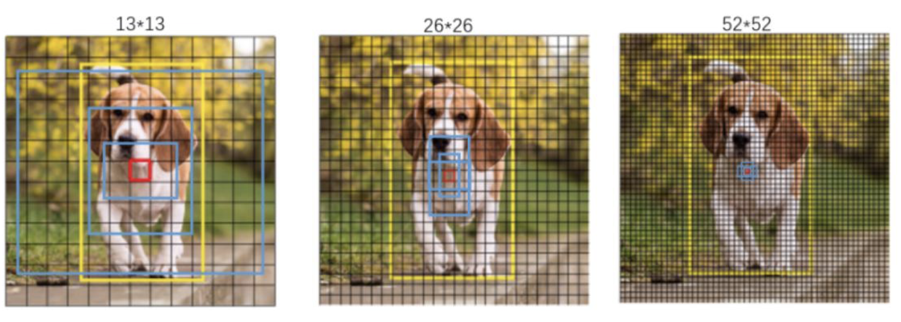
- 输出结果
YoloV3的输出形式如下图所示： 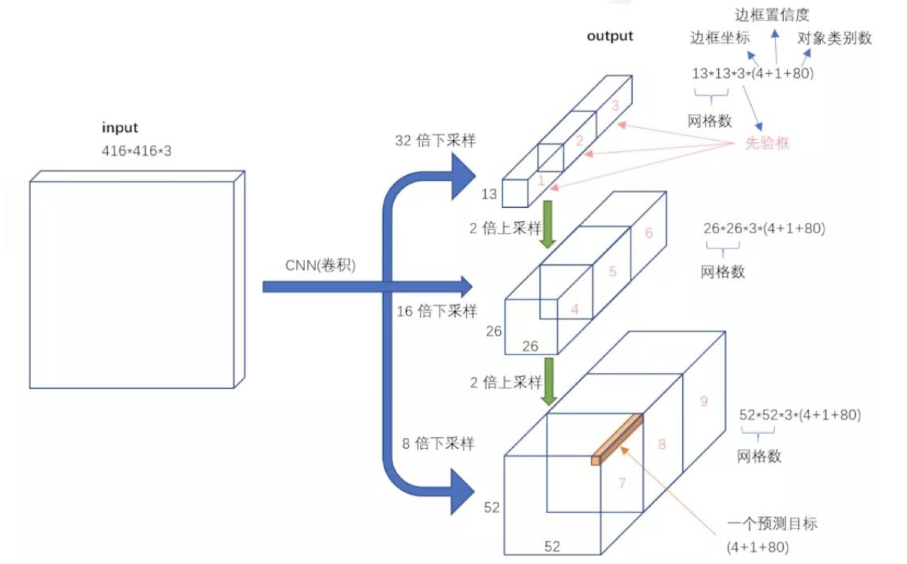
输入416×416×3的图像，通过darknet网络得到三种不同尺度的预测结果，每个尺度都对应N个通道，包含着预测的信息；
每个网格每个尺寸的anchors的预测结果。
YOLOv3共有13×13×3 + 26×26×3 + 52×52×3个预测 。每个预测对应85维，分别是4（坐标值与V2一样）、1（置信度分数）、80（coco类别概率）。
- 输出概率值
预测对象类别时不使用softmax，而是被替换为一个1x1的卷积层+logistic激活函数的结构。使用softmax层的时候其实已经假设每个输出仅对应某一个单个的class，但是在某些class存在重叠情况（例如woman和person）的数据集中，使用softmax就不能使网络对数据进行很好的预测。
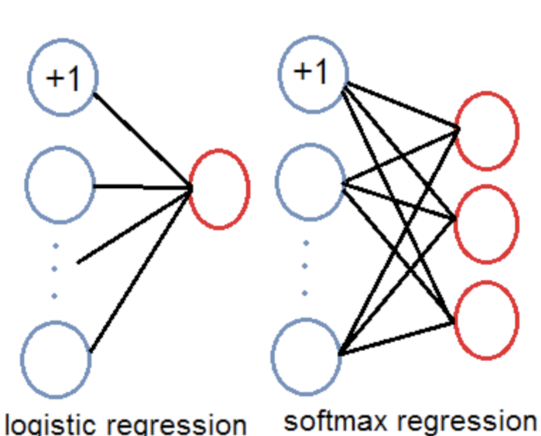
3.3 网络训练¶
3.3.1训练样本的构建¶
我们介绍了网络的输出是对anchor进行分类和回归的，所以在设置正负样本时也需要对anchor进行设置：我们的思路是与真实框交并比较大的anchor就是正样本，负责进行目标检测，与真实框交并比小的anchor是负样本，负样本不负责进行目标预测，也就是背景，那在这里我们是如何设置正负样本的呢？如下图所示：
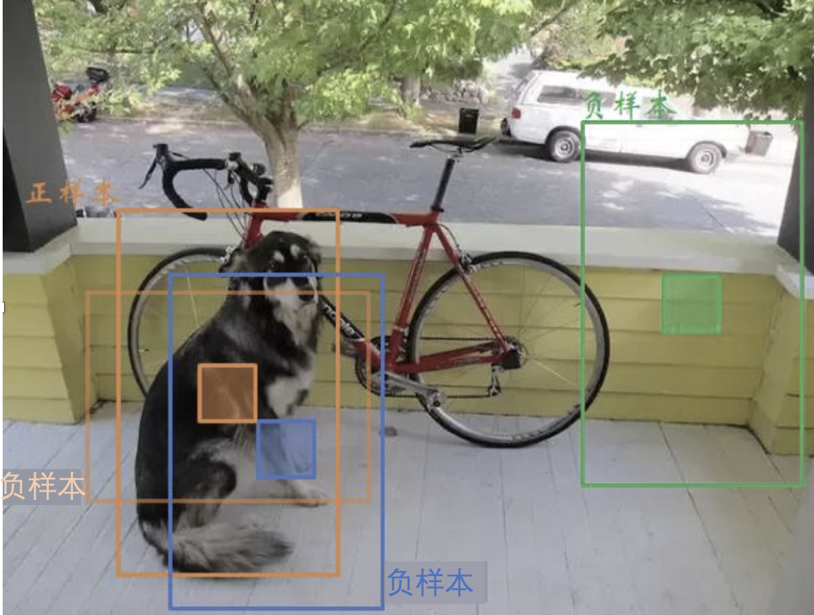
- 正样本：首先计算目标中心点落在哪个grid上，然后计算这个grid对应的3个先验框（anchor）和目标真实位置的IOU值，取IOU值最大的先验框和目标匹配。那么该anchor 就负责预测这个目标，那这个anchor就作为正样本，将其置信度设为1，其他的目标值根据标注信息设置。
- 负样本：所有不是正样本的anchor都是负样本，将其置信度设为0，参与损失计算，其它的值不参与损失计算，默认为0。
3.3.2 损失函数¶
YoloV3的损失函数分为三部分：
- box的损失：
只有负责检测的gridcell中的anchor才会计入损失,对x,y,w,h分别求均方误差
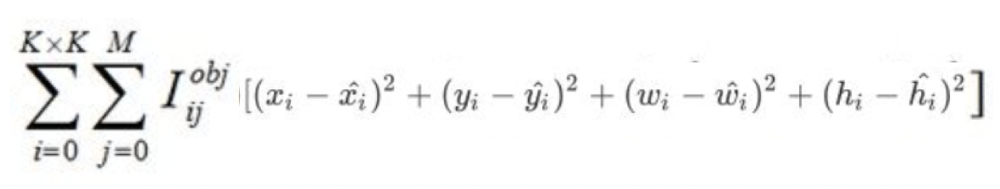
- 置信度的损失
置信度的损失是二分类的交叉熵损失函数，所有的box都计入损失计算
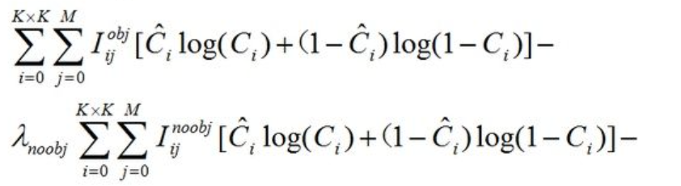
- 分类的损失：
分类的损失是二分类的交叉熵损失，只有负责检测目标的才计算损失
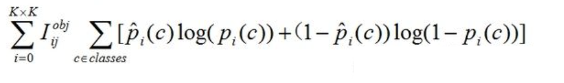
我们将这三个损失加在一起就可以获取总损失，进行模型训练。
3.3.3 模型训练¶
模型训练过程与其他网络是类似的，首先我们可以根据训练集的标注信息获取每幅图像对应的目标值，即设置正负样本（三个尺度的目标值），接下来将图像送入网络中进行预测，计算预测结果与目标值之间的差异（损失函数），反向传播更新参数即可，直到损失收敛即可。
3.4 模型预测¶
模型训练好后，我们将图片resize成416x416的大小，送入到yoloV3网络中，输出3个尺度的预测结果，每个结果中包含边框坐标（4个数值），边框置信度（1个数值），对象类别的概率（对于COCO数据集，有80种对象）。我们筛选出置信度较高的检测结果（>0.5），在采用NMS（Non-maximal suppression，非极大值抑制）算法选出最有可能是目标的结果，就完成了目标的检测。
总结
- 知道yolo网络架构，理解其输入输出
YOLO的整个结构就是输入图片经过神经网络的变换得到一个输出的张量
- 知道yolo模型的训练样本构建的方法
对于原图像中的每一个网格grid都需要构建一个30维的向量：分类，置信度，回归的目标值
- 理解yolo模型的损失函数
损失函数分为3部分：分类损失，回归损失，置信度损失
- 知道yoloV2模型的改进方法
使用了BN层，高分辨率训练，采用Anchorbox，聚类得到anchorbox的尺寸，改进边界框预测的方法，特征融合，多尺度训练，网络模型使用darknet19，利用imagenet数据集识别更多的目标
- yoloV3模型模型结构
模型输入图像大小是32的倍数，backbone是darknet53，使用FPN网络进行特征融合；输出包含3个尺度的预测结果，每个结果中包含边框坐标（4个数值），边框置信度（1个数值），对象类别的概率（对于COCO数据集，有80种对象）。
- yoloV3模型的训练方式
知道损失函数，正负样本设置，进行训练。